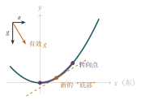

STEP II 2021，第 10 题
继续之前，请先阅读题目（原题为英文）。题目载于 OCR 提供下载的 2021 年 STEP 试卷（zip 文件）内的 STEP II 试卷： www.ocr.org.uk/Images/696588-2021-past-papers.zip
引子
火车驶离车站时，你会感到自己被压向椅背；桌上那杯咖啡的液面倾斜了；地板上的球滚向车尾。从车厢内看，一切就像重力倾斜了一样：除了向下，还稍微指向后方。爱因斯坦（Einstein）领悟到这不仅仅是比喻，并把这个领悟称为“我一生中最快乐的想法”：在局部范围内，重力与加速度是无法区分的。
这道题把一颗珠子穿在弯曲的金属线上，再放进一列正在加速的火车里。从火车上看，珠子的运动就像身处一个倾斜了的重力场（gravitational field）之中，倾斜的角度的正切为 \(a/g\)。金属线的底部不再是最低点，珠子会围绕一个新的平衡位置（equilibrium）振动。
动笔之前
火车以加速度 \(a\) 向西（即沿负 \(x\) 方向）加速。对车上的观察者来说，质量为 \(m\) 的物体看似受到怎样的“假想”力作用？
在火车的参考系（frame）中，只要加上一个假想力（fictitious force）\(-m \times (\text{参考系的加速度})\)，牛顿第二定律（Newton’s second law）便仍然成立。参考系在 \(x\) 方向的加速度为 \(-a\)，所以假想力是 \(+ma\)，指向东。连同重力一并考虑，珠子每单位质量所感受到的有效重力（effective gravity）为 \((a, -g)\)：向东倾斜。
逐步解题
阶段 1 不能静止于原点
在原点处，金属线 \(ky = x^2\) 是水平的。该处的法向反作用力（normal reaction）是铅垂的，因此无法抵消向东的假想力 \(ma\)。沿金属线方向的合力为 \(ma \neq 0\)，所以珠子不可能相对于火车保持静止。■
阶段 2 能量方程
在火车的参考系中写出牛顿定律，当中要包括法向反作用力 \(\mathbf{N}\)。然后与速度 \((\dot x, \dot y)\) 取点积。为甚么 \(\mathbf{N}\) 会消失？
在火车的参考系中， \[m(\ddot x, \ddot y) = \mathbf{N} + (ma, -mg).\] 金属线是光滑的，所以 \(\mathbf{N}\) 垂直于金属线，因而也垂直于沿金属线方向的速度 \((\dot x, \dot y)\)。与速度取点积（dot product），\(\mathbf{N}\) 便会消去： \[m\dot x\ddot x + m\dot y\ddot y = ma\dot x - mg\dot y, \qquad\text{所以}\qquad \dot x(\ddot x - a) + \dot y(\ddot y + g) = 0. \qed\] 左边是 \(\frac12(\dot x^2 + \dot y^2) - ax + gy\) 的导数，因此这个量是常数。■
这就是火车参考系中的能量守恒（conservation of energy），其中每单位质量的势能（potential energy）\(-ax + gy\) 已把假想力计算在内。
阶段 3 能升到多高？
由于珠子从原点由静止出发，该常数为 \(0\)。在最高点，珠子瞬时静止。由此可得出甚么方程？
静止时，\(\frac12(\dot x^2 + \dot y^2) = 0\)，所以 \(ax = gy\)。代入 \(y = \frac{x^2}{k}\)，得 \(ax = \frac{gx^2}{k}\)，所以（除了起点 \(x = 0\) 之外）\(x = \frac{ak}{g}\)，而 \[b = \frac{a^2k}{g^2}. \qed\] 珠子沿金属线向东摆上至点 \(\bigl(\frac{ak}{g}, \frac{a^2k}{g^2}\bigr)\)，然后返回原点，如此往复不息。
阶段 4 最快的一点
把速率的平方写成只含 \(x\) 的函数。它在哪里最大？
速率的平方是 \(2(ax - gy) = 2\bigl(ax - \frac{gx^2}{k}\bigr)\)，这是 \(x\) 的二次式，在 \(x = \frac{ak}{2g}\) 处取得最大值，刚好在两个转向点（turning point）的正中间。该处速率的平方为 \(2\bigl(\frac{a^2k}{2g} - \frac{a^2k}{4g}\bigr) = \frac{a^2k}{2g}\)，所以最大速率是 \[a\sqrt{\frac{k}{2g}}. \qed\]
求金属线在 \(x = \frac{ak}{2g}\) 处的斜率。它与有效重力 \((a, -g)\) 的方向有甚么关系？
斜率是 \(\frac{2x}{k} = \frac ag\)。所以在这一点，金属线垂直于有效重力：它是金属线在倾斜重力场中的“最低”点，而珠子就围绕它振动（图 11.5.1）。

回顾
在方便的参考系中解题，并加上假想力。在火车的参考系中，金属线是固定的，唯一的代价是多了一个恒力。
与速度取点积。这样可以消去约束力（constraint force），并得出能量方程。
诠释答案。转向点和最快的一点都有几何意义：有效重力倾斜了。
背后的数学
假想力
牛顿定律在惯性参考系（inertial frame）中成立，即没有加速的参考系。在加速参考系中，只要加上假想力，牛顿定律便可继续使用：对于加速度为 \(\mathbf{A}\) 的参考系，要加上 \(-m\mathbf{A}\)；而在旋转参考系中，则要加上离心力（centrifugal force）和科里奥利力（Coriolis force）。它们之所以称为假想力，是因为没有任何物体施加这些力；它们纯粹是参考系造成的假象。但对身处其中的人来说，它们却是千真万确的。离心力使地球在两极变得扁平；科里奥利力决定了飓风旋转的方向（在北半球为逆时针），也令远程炮弹偏离原来的方向。
等效原理
恒定的假想力 \(-m\mathbf{A}\) 与质量成正比，这一点与重力完全相同。在一个密封的箱子内，没有任何实验能够分辨箱子是静止在行星上，还是在虚空中加速：这就是等效原理（equivalence principle）。爱因斯坦以它作为广义相对论（general relativity）的出发点。既然光横越一个加速中的箱子时看来会弯曲，光在重力场中也必定会弯曲；既然加速火箭的前端和后端的时钟快慢不同，重力场中不同高度的时钟也必定如此。这两个预测都已得到证实，而每一颗 GPS 卫星都必须就第二个效应作出修正：单是这个效应，就令卫星上的时钟每天比地面的时钟快约 \(45\) 微秒。
1907 年，爱因斯坦在伯尔尼的专利局工作，当时他正在撰写一篇关于狭义相对论（special relativity）的综述文章。据他后来忆述，就在这时，“我一生中最快乐的想法”出现了：一个从屋顶自由堕下的人，不会感觉到自己的重量。只要选取一个下堕中的参考系，重力就可以被“变换掉”。他再花了八年时间，并借助大量新的数学（由高斯（Gauss）和黎曼（Riemann）发展的弯曲空间微分几何），才把这个想法变成 1915 年的广义相对论。
思维技巧
在加速度恒定的参考系中，有一个恒定的假想力在起作用。它可以并入势能之中，而能量在该参考系中守恒。
把运动方程与速度取点积以消去约束力，这个技巧在任何参考系中都适用。到了大学，它会成为一个普遍的原理：若一个系统的方程并不显含时间，该系统便有一个守恒的能量。
延伸练习
火车上的大炮。试做 STEP I 2000，第 9 题：在加速中的车厢内发射抛体（projectile），其中加速度的作用就如重力倾斜了一样。
逆风。试做 STEP II 2006，第 11 题：抛体迎着恒定的风飞行，风可以在它落地之前把它吹回你这边。
火车上的咖啡。证明在加速中的火车上，一杯咖啡的液面是一个与水平面成 \(\arctan(a/g)\) 角的倾斜平面。
微小振动。求珠子围绕 \(x = \frac{ak}{2g}\) 作微小振动的周期。（提示：在新的底部附近，金属线近似于一个圆，其半径等于金属线在该处的曲率半径（radius of curvature）。）
延伸阅读
Daniel Kleppner & Robert Kolenkow, An Introduction to Mechanics（Cambridge University Press），当中讲述非惯性参考系与假想力的一章。
Albert Einstein, Relativity: The Special and the General Theory（有多个版本）。爱因斯坦亲自撰写的普及读物，当中包括加速箱子的讨论。
Pedro Ferreira, The Perfect Theory（Little, Brown）。一部广义相对论的传记。